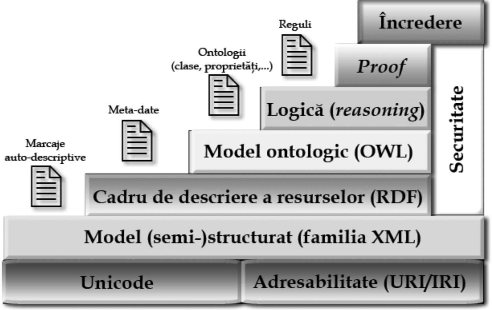
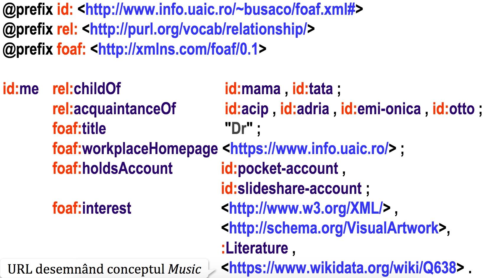
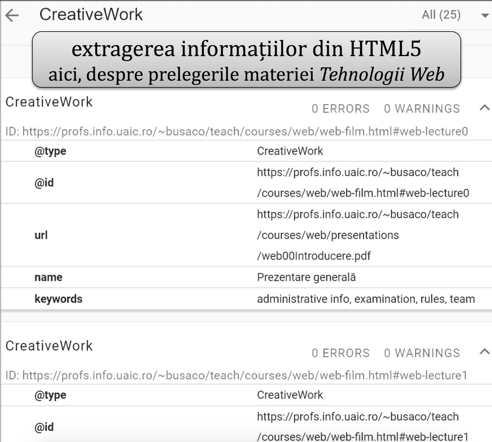
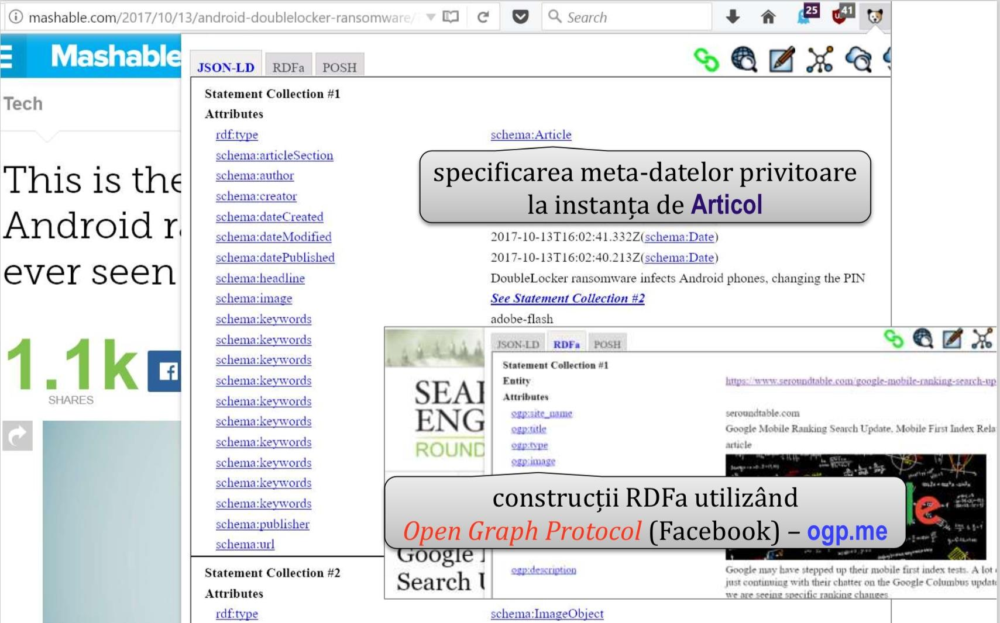

Data publicării: 09.04.2018
Autor articol: Sabin Buraga
Introducere
Spațiul World Wide Web se află actualmente în așa-numitul stadiu de Web al datelor (Web of data), etapă premergătoare a Web-ului semantic. Acest articol va prezenta unele aspecte de interes referitoare la problematicile, tehnologiile, limbajele de specificare și domeniile de aplicabilitate, oferind o serie de detalii vizând specificarea meta-datelor.
Punerea problemei
Atunci când luăm în considerație Internet-ul și, în special, Web-ul, ne gândim automat la partajarea cunoștințelor (aceasta implică activități de publicare, căutare, regăsire și interpretare a acestora). Evident, asemenea activități nu pot fi efectuate doar procesând documente Web adoptând “vechile” marcaje HTML (HyperText Markup Language), deoarece limbajul HTML este un limbaj pentru prezentarea datelor (conținutului), nu destinat stocării sau atașării de semantici (înțelesuri) acestora.
Aceeași situație o avem în cazul altor meta-limbaje de parcare ori formate precum XML (Extensible Markup Language) – plus limbajele descriptive derivate ca SVG (Scalable Vector Graphics), RSS (Really Simple Syndication) și altele –, JSON (JavaScript Object Notation) sau CSV (Comma Separated Values) – larg folosite pentru interschimbul de date între aplicații distribuite eterogene.
De asemenea, asistăm la producerea a ceea ce se numește supraîncărcare informațională (information overload) și la existența de aplicații strâns conectate, prea puțin flexibile (așa-zisele sisteme de tip conductă – pipestove systems), informațiile neputând fi partajate corespunzător între componente software – eventual, disponibile ca (micro-)servicii Web și exploatate tradițional (on premises) și/sau grație tehnologiilor “în nori” (cloud computing). Mai mult, se constată o agregare precară a conținutului disponibil pe Web, deseori disponibil numai în cadrul unor sisteme închise, proprietare (denumite plastic “grădini împrejmuite” – walled gardens).
Cerințele imediate sunt (Buraga, 2004; Buraga, 2006):
- Posibilitatea de a recurge la o manieră de atașare de date privitoare la date (meta-date) conducând la crearea de vocabulare de termeni descriind proprietăți, domenii, lumi etc.;
- Existența suportului de specificare a relațiilor dintre (clase de) resurse, pentru a crea premisele definirii și folosirii pe scară largă a unor structuri de organizare a datelor, ceea ce pe termen mai lung va conduce la sedimentarea depozitelor de cunoștințe (knowledge repositories).
Apare, de asemenea, necesitatea de a exprima semantica (înțelesul) resurselor Web actuale într-un mod formal, procesabil de către calculator. Două concepte importante sunt:
- Relațiile (relationships) ce pot fi stabilite a-priori sau automat între conceptele vehiculate – de exemplu, pentru a defini termenul “aplicație Web” ne bazăm pe “software”, iar când specificăm conceptul “serviciu Web” apelăm la relația sa cu termeni precum “Web” și “calcul distribuit”.
- Constrângerile sau restricțiile (constraints) – pentru a face distincție clară dintre “aplicație Web” și “serviciu Web”, vom defini un set de restricții specifice.
Revenind la Web, acesta evoluează – lent, dar constant – spre ceea ce va fi Web-ul semantic sau The Web of Meaning, conform celor declarate de Tim Berners-Lee, creatorul WWW (în Berners et al., 2001).
Printre dezideratele Web-ului semantic se pot enumera următoarele (conform Berners-Lee, Hendler & Lassila, 2001; Feigenbaum et al., 2007 și Allemang & Hendler, 2011):
- Asocierea de semantici legăturilor dintre resursele Web, cu posibilitatea extinderii acestor semantici.
- Resursele Web să poate fi clasificate, pentru aceasta trebuind să fie adoptate specificații de descriere a unor structuri conceptuale.
- La nivel de programare, să existe entități (i.e. framework-uri, servicii Web, API-uri, platforme) capabile să proceseze în manieră inteligentă – în conjuncție cu alte abordări, precum învățare automată, rețele neuronale, metode inspirate din natură și altele – și să poată raționa, oferind mașinilor și oamenilor servicii complexe (e.g., căutarea și filtrarea datelor/cunoștințelor, regăsirea unor tipuri de resurse fizice/logice, monitorizarea activităților, corelarea cunoștințelor etc.).
- Partajarea de către utilizatorii umani sau de către componente software a cunoștințelor, indiferent de modul de stocare și de reprezentare internă a acestora – adică, asigurarea interoperabilității, un aspect deosebit de important în contextul aplicațiilor aliniate problematicilor cloud computing.
Un prim pas este oferit de un cadrul conceptual de descriere a resurselor – RDF (Resource Description Framework) – ce permite reprezentarea informațiilor care pot fi identificate pe Web, chiar dacă nu pot fi accesate via Web. Modelul RDF se bazează pe triple (subiect, predicat, obiect), fiecare entitate constituientă putând fi exprimată prin identificatori uniformi de resursă (URI – Uniform Resource Identifiers). Marcajele existente – chiar și cele prezente în pagini Web tradiționale sau drept construcții JSON – pot fi astfel extinse prin adăugarea de adnotări semantice (semantic annotations), descriind conținutul și/sau funcția resurselor Web existente. Aceste aspecte vor fi surprinse în următoarele secțiuni ale articolului de față.
Al doilea element important este să putem modela la nivel semantic datele pentru a putea constitui rețele de concepte și ontologii cu scopul de a defini, procesa, gestiona și reutiliza în manieră “inteligentă” cunoștințele. Ontologiile vor complementa vocabularele folosite la adnotări, în vederea realizării de raționamentele automate. Despre acestea vom discuta într-un alt context.
Fundația Web-ului semantic este una stratificată, așa cum este prezentată în figura următoare.

Amănuntele sunt studiate în cadrul disciplinei “Dezvoltarea aplicațiilor Web” (Buraga, 2018) disponibilă în cadrul programului de master oferit de Facultatea de Informatică a Universității “Alexandru Ioan Cuza” din Iași.
Exprimarea meta-datelor și relațiilor
Deoarece limbajele sau formatele actuale folosite pentru prezentare (HTML) sau interschimb de date (CSV, JSON, XML etc.) nu pot exprima în mod nativ semantici – reflectând doar o manieră uniformă de structurare a datelo, pentru a putea atașa meta-date resurselor Web trebuie recurs la un cadru general specific.
O clasificare a meta-datelor
Conform Kashyap și Sheth (1997), există mai multe tipuri de meta-date.
- Meta-datele independente de context vizează informațiile ce nu sunt atașate direct de conținutul resursei pe care o descriu. Ele descriu contextul și mediul în cadrul datele au fost create și stocate. Ca exemple, se pot menționa meta-datele referitoare la platforma folosită pentru crearea unei resurse. Tehnologic, acestea pot fi exprimate, de pildă, via XMP (pentru documente generate cu produse oferite de compania Adobe).
- Meta-datele dependente de context nu descriu conținutul datelor, ci proprietăți adiționale care se pot extrage direct din conținut. În acest caz, meta-datele pot include informații referitoare la lungimea unui document, numărul de pagini ale unei cărți sau limba în care e disponibil un text. Drept exemplificare, se poate menționa mulțimea de meta-date “scufundate” într-un document produs de o suită de birou.
- Meta-datele bazate pe conținut reflectă efectiv conținutul unei resurse, oferind suplimentar anumite informații și/sau maniere de structurare a conținutului pentru a facilita procesarea datelor originare. Un exemplu ar putea fi indexul asociat unui volum tipărit sau cel disponibil în cadrul unei cărți electronice în format EPUB.
- Meta-datele care descriu conținutul își găsesc întrebuințări la sumarizarea conținutului unei resurse, fiind folosite dacă o anumită dată este validă pentru îndeplinirea unui scop precizat (e.g., filtrare, corelare). Drept exemplificări putem enumera listele de cuvinte-cheie atașate unui articol sau sistemele bazate pe termeni de conținut (tagging) specificate de utilizatori în cadrul aplicațiilor Web sociale. Tot aici, se pot menționa vocabularele EXIF (pentru fotografii) sau ID3 (pentru conținuturi audio în format MP3).
De asemenea, meta-datele pot fi “containere” pentru diverse informații tehnice – e.g., referitoare la modul sau locația de stocare, la metodele de acces, la îndeplinirea unor factori calitativi etc.
Pentru găsirea și accesarea informațiilor, rolul meta-datelor este dublu. Un prim aspect se referă la furnizorii de date cărora li se oferă un mijloc de organizare (structurare), întreținere și clasificare (catalogare) a resurselor. Secundar, utilizatorilor li se pun la dispoziție mijloace pentru identificarea, obținerea și interpretarea cunoștințelor.
Modelul RDF
Apare cerința existenței unor standarde privind sintaxa, structura și conținutul resurselor Web. Forma de modelare a meta-datelor trebuie să ia în considerație citirea și procesarea acestora de către mașină, într-o manieră independentă de limbajul de programare, de aplicație sau de platformă (software/hardware). De asemenea, e necesar să se ofere o modalitate de asociere – pe baza unor mecanisme externe – a meta-datelor resurselor vizate, disponibile în formate deschise ori proprietare (textuale sau binare).
Consorțiul Web propune un model abstract bazat pe triple, denumit RDF (Resource Description Framework), ale căror sintaxe se pot baza pe XML, JSON sau alte formate textuale.
Resursele reprezintă datele descrise de o expresie (aserțiune, declarație) RDF. O resursă poate fi o pagină Web, un fragment de document – precum o imagine sau un video-clip – ori o entitate (abstractă) ce nu poate fi direct accesată pe baza tehnologiilor Internet – exemplificări: o persoană, un lăcaș cultural, o specificație, un tip de date. Fiecărei resurse, denumite subiect, i se pot asocia predicate, adică proprietăți. O proprietate reprezintă un aspect specific, o caracteristică, un atribut sau o relație descriind o resursă. Fiecare proprietate posedă o semantică, un set (interval) de valori permise, o mulțime de tipuri (domeniu) de resurse pe care le descrie și poate avea un set de relații (interdependențe) stabilite cu alte proprietăți. Valoarea efectivă, denumită obiect, a unei proprietăți poate fi un literal (i.e. șir de caractere) sau o adresă Web (URI).
Alături de sintaxa tradițională bazată pe XML, o sintaxă populară, intuitivă, este Turtle – Terse RDF Triple Language (specificație a Consorțiului Web din 2014).
Astfel, se pot exprima aserțiuni utile precum faptul că “Diana este o persoană și-i simpatizează pe Ana, Bogdan și Cristina”:
@prefix s: <http://www.infoiasi.ro/voc/wade#> @prefix schema: <http://schema.org/> s:diana a schema:Person; s:simpatizează ( s:ana s:bogdan s:cristina ) .
S-au folosit două vocabulare oferind denumiri de entități: unul propriu, prefixat cu “s”, altul disponibil public – schema.org – pentru a descrie concepte ce pot fi indexate de către motoarele de căutare. Aici, s-a utilizat clasa (conceptul) Person. Construcția “(…)” indică o colecție (în acest caz, o listă).
Vocabulare publice
Există o mulțime suficient de cuprinzătoare de vocabulare publice menite a descrie diverse domenii de cunoaștere. Le menționăm doar pe cele mai populare – pentru detalii, a se consulta (Buraga, 2006) și (Buraga, 2018):
- DCMI (Dublin Core Metadata Initiative) destinat descrierii artefactelor culturale (în special, tipărituri);
- FOAF (Friend Of A Friend) pentru descrierea relațiilor dintre persoane/organizații, folosit cu precădere pentru a exprima rețele sociale – un exemplu e figurat mai jos, în care se recurge și la vocabularul public Relationship exprimând posibile relații sociale între persoane;

- Schema.org – reprezintă o colecție de vocabulare (scheme de date, adică modele conceptuale) – punând la dispoziție conceptele + proprietățile aferente referitoare la entități de interes ca Book, Event, LocalBusiness, Movie, Offer, Person, Recipe, Review, TVSeries și multe altele – recunoscute și indexate de roboții principalelor motoare de căutare (Bing, Google, Yahoo!, Yandex). Pentru istoric și viziune, de consultat prezentarea (Wallis, 2017). Construcțiile schema.org pot fi “scufundate” direct în documentele HTML5 via noile atribute privitoare la microdate: itemscope, itemprop, itemref, itemtype, itemid. Alte detalii sunt oferite de Buraga (2017).
Exemplificări
Un prim exemplu vizează inspectarea datelor structurate exprimate cu schema.org cu instrumentul Structured Data Testing Tool – oferit liber de Google.
Drept caz concret, s-a considerat pagina Web conținând prezentările săptămânale aferente disciplinei “Tehnologii Web”. În captura-ecran următoare se observă meta-datele asociate – e.g., url, name, keywords,… – fiecărei prelegeri de tip CreativeWork.

A doua exemplificare demonstrează extragerea construcțiilor structurate RDF din cadrul documentelor Web pe baza instrumentului OpenLink Structured Data Sniffer – disponibil liber ca extensie de navigator Web.
Aici, preluăm meta-date oferite de diverse situri Web precum Mashable și, respectiv, eBay – a se urmări imaginile de mai jos:

Referințe bibliografice
- Allemang, D., Hendler, J., Semantic Web for the Working Ontologist (2nd Edition), Morgan Kaufmann, 2011.
- Berners-Lee, T., Hendler, J., Lassila, O., “The Semantic Web”, Scientific American, May 2001.
- Buraga, S., Semantic Web. Fundamente și aplicații, Matrix Rom, 2004: http://www.slideshare.net/busaco/sabin-buraga-semantic-web-fundamente-i-aplicaii
- Buraga, S., Tehnologii XML, Polirom, 2006: http://www.slideshare.net/busaco/sabin-buraga-tehnologii-xml
- Buraga, S., “(Re)găsirea resurselor Web”, prelegere în cadrul materiei Dezvoltarea aplicațiilor Web la nivel de client, Facultatea de Informatică, Universitatea “Alexandru Ioan Cuza” din Iasi, Romania, 2017: http://profs.info.uaic.ro/~busaco/teach/courses/cliw/presentations/web03-Regasirea-resurselor-Web-SEO-MicrodateHTML5.pdf
- Buraga, S., Dezvoltarea aplicațiilor Web (Web Application Development), Facultatea de Informatică, Universitatea “Alexandru Ioan Cuza” din Iasi, Romania, 2018: http://profs.info.uaic.ro/~busaco/teach/courses/wade/
- Feigenbaum, L. et al., “The Semantic Web in Action”, Scientific American, Dec. 2007.
- Kashyap, V., Sheth, A., “Semantic heterogeneity in global information systems: the role of metadata, context and ontologies”, in Papazoglou, M, Schlageter, G. (Eds.), Cooperative Information Systems: Current Trends and Directions, Academic Press, 1997.
- Wallis, R., “Schema.org: Where Did that Come from?”, LODLAM Summit, 2017: http://www.slideshare.net/rjw/schemaorg-where-did-that-come-from-77955231